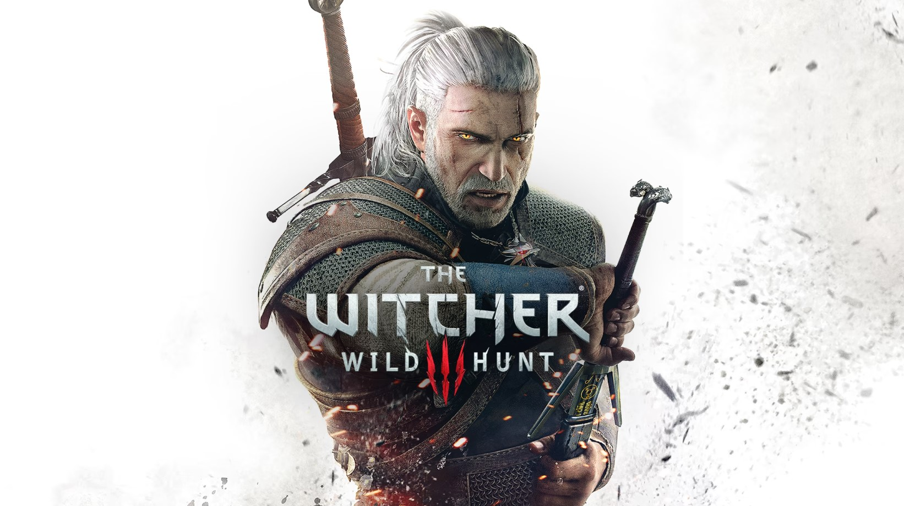

The Witcher III: Wild Hunt
CLP $32.990
CLP $32.990
The Witcher 3 es la tercera entrega de la saga The Witcher desarrollada por CD Projekt para PS4, Xbox One y Pc. Se trata de un videojuego que mezcla elementos de aventura, acción y rol en un mundo abierto épico basado en la fantasía. El jugador controlará una vez más a Geralt de Rivia, el afamado cazador de monstruos, (también conocido como el Lobo Blanco) y se enfrentará a un diversificadísimo bestiario y a unos peligros de unas dimensiones nunca vistas hasta el momento en la serie, mientras recorre los reinos del Norte. Durante su aventura, tendrá que hacer uso de un gran arsenal de armas, armaduras y todo tipo de magias para enfrentarse al que hasta ahora ha sido su mayor desafío, la cacería salvaje. Este videojuego ha sido galardonado como el mejor juego del año 2015 tanto por críticos especializados como por galas de premios como los “Golden Joystick Awards”, “Game Developers Choice Awards” y “The Game Awards”. Además cuenta con 2 DLC o Expansiones: Blood and wine, y Hearts of Stone.